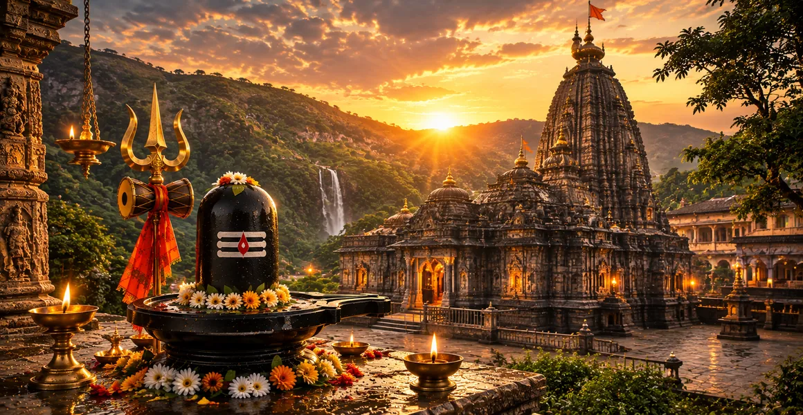

त्र्यंबकेश्वर की महिमा
कोटिरुद्र संहिता का सत्रहवाँ अध्याय त्र्यंबकेश्वर ज्योतिर्लिंग की उत्कृष्ट महिमा, गौतम ऋषि की तपस्या और गोदावरी नदी के पवित्र अवतरण का वर्णन करता है।
यह दर्शाता है कि कैसे भक्ति और तपस्या सर्वोच्च भगवान और पवित्र जल को पृथ्वी को आशीर्वाद देने के लिए आमंत्रित कर सकती है, मुक्ति का एक शाश्वत केंद्र स्थापित कर सकती है।
यह अध्याय भगवान शिव की अद्वितीय त्रिमुखी अभिव्यक्ति को प्रकट करता है जो ब्रह्मांडीय शक्तियों की सर्वोच्च त्रिमूर्ति का प्रतीक है।
अध्याय 17 की मुख्य बातें
गौतम ऋषि की तपस्या
ऋषि ने दिव्य कृपा प्राप्त करने के लिए ब्रह्मगिरि पहाड़ियों पर कठोर तपस्या की।
गोदावरी का अवतरण
पवित्र गोदावरी नदी भूमि को शुद्ध करने और सभी पापों को धोने के लिए प्रकट हुई।
त्र्यंबकेश्वर ज्योतिर्लिंग
भगवान शिव स्रोत पर स्थायी रूप से दीप्तिमान ज्योतिर्लिंग के रूप में प्रकट हुए।
त्रिमुखी रूप
लिंग अद्वितीय रूप से ब्रह्मा, विष्णु और शिव को एक साथ दर्शाता है।
पापों का शुद्धिकरण
गोदावरी में दर्शन और स्नान आत्माओं को भारी कर्म ऋण से मुक्ति दिलाते हैं।
परम तीर्थ
त्र्यंबकेश्वर भारत में सबसे प्रतिष्ठित आध्यात्मिक अभयारण्यों में से एक है।
इस अध्याय में मुख्य विषय
- 01गौतम ऋषि की ब्रह्मगिरि पर तपस्या→
- 02भक्ति से भगवान शिव को प्रसन्न करना→
- 03गोदावरी नदी का पवित्र अवतरण→
- 04त्र्यंबकेश्वर का प्रकटीकरण→
- 05त्रिमुखी लिंग का महत्व→
- 06ब्रह्मा, विष्णु और शिव की एकता→
- 07आसपास के क्षेत्र का पवित्रीकरण→
- 08गोदावरी में स्नान का परम पुण्य→
- 09आध्यात्मिक मुक्ति और शांति प्राप्त करना→
- 10तीर्थ की शाश्वत महिमा→
- 11अध्याय 18 की ओर →
गौतम ऋषि की ब्रह्मगिरि पर तपस्या
अध्याय 17 की शुरुआत गौतम ऋषि द्वारा राजसी ब्रह्मगिरि पहाड़ियों पर की गई गहन तपस्या के वर्णन से होती है।
पिछले कर्म संबंधी उलझनों को दूर करने और दुनिया में आध्यात्मिक कल्याण लाने की कोशिश में, ऋषि गहन ध्यान में लगे रहे।
भक्ति से भगवान शिव को प्रसन्न करना
गौतम की अटूट भक्ति और कठोर तपस्या से प्रभावित होकर, भगवान शिव परम कृपा की स्थिति में उनके सामने प्रकट हुए।
भगवान ने उन्हें वरदान दिए, जिससे ऋषि को स्थायी दिव्य उपस्थिति और एक शुद्ध करने वाली नदी मांगने के लिए प्रेरित किया।
गोदावरी नदी का पवित्र अवतरण
भगवान शिव की कृपा और गौतम की प्रार्थना से, माँ गंगा गोदावरी नदी (गौतमी) के रूप में अवतरित हुईं।
यह पवित्र धारा ब्रह्मगिरि पहाड़ियों से बहने लगी, पापों को धोने लगी और सभी मनुष्यों को सर्वोच्च आध्यात्मिक योग्यता प्रदान करने लगी।
त्र्यंबकेश्वर का प्रकटीकरण
जिस क्षेत्र में गोदावरी का उद्गम हुआ, उस क्षेत्र को स्थायी रूप से आशीर्वाद देने के लिए, भगवान शिव गौरवशाली त्र्यंबकेश्वर ज्योतिर्लिंग के रूप में प्रकट हुए।
यह मंदिर प्रकाश की एक शाश्वत किरण बन गया, जिसने पूरे ब्रह्मांड से ऋषियों, देवताओं और भक्तों को आकर्षित किया।
त्रिमुखी लिंग का महत्व
धर्मग्रंथ त्र्यंबकेश्वर की विशिष्ट विशेषता पर प्रकाश डालता है: सर्वोच्च त्रिमूर्ति का प्रतिनिधित्व करने वाला एक अद्वितीय तीन-मुखी लिंग।
अन्य तीर्थस्थलों के विपरीत, यह रूप एक साथ रचनात्मक, कायम रखने वाली और विघटित करने वाली ब्रह्मांडीय शक्तियों का सम्मान करता है।
ब्रह्मा, विष्णु और शिव की एकता
लिंग पर तीन मुख भगवान ब्रह्मा, भगवान विष्णु और भगवान रुद्र का प्रतिनिधित्व करते हैं, जो इस बात का प्रतीक है कि सर्वोच्च सत्य एक है।
इस एकल लिंग की पूजा करना सामंजस्यपूर्ण एकता में संपूर्ण दिव्य त्रिमूर्ति की पूजा करने के बराबर है।
आसपास के क्षेत्र का पवित्रीकरण
ज्योतिर्लिंग और गोदावरी नदी दोनों की उपस्थिति ने ब्रह्मगिरि क्षेत्र को एक सर्वोच्च पवित्र भूमि में बदल दिया।
आसपास का हर पत्थर, पेड़ और जलस्रोत दिव्य आध्यात्मिक ऊर्जा से चार्ज हो गए।
गोदावरी में स्नान का परम पुण्य
पाठ इस बात पर जोर देता है कि त्र्यंबकेश्वर के पास गोदावरी में पवित्र स्नान करने से जीवन भर के संचित पाप धुल जाते हैं।
भक्तों को मन की पवित्रता, आध्यात्मिक स्पष्टता और भय से मुक्ति का आशीर्वाद मिलता है।
आध्यात्मिक मुक्ति और शांति प्राप्त करना
सच्ची श्रद्धा से त्र्यंबकेश्वर की पूजा करने से जन्म और मृत्यु के चक्र (संसार) से मुक्ति मिलती है।
साधकों को गहन आंतरिक शांति और सर्वोच्च भगवान के साथ शाश्वत मिलन प्राप्त होता है।
तीर्थ की शाश्वत महिमा
यह अध्याय अनुग्रह और मुक्ति के अभयारण्य के रूप में त्र्यंबकेश्वर की चिरस्थायी महानता का गुणगान करते हुए समाप्त होता है।
ऐसा कहा जाता है कि इसका पवित्र नाम ही हृदय को शुद्ध करता है और मानवता में सर्वोच्च भक्ति को प्रेरित करता है।
अध्याय 18 की ओर
त्र्यंबकेश्वर की महानता और गोदावरी के अवतरण के बारे में विस्तार से बताते हुए, कथा अगले दिव्य ज्योतिर्लिंग में परिवर्तित होने की तैयारी करती है।
पाठकों को अध्याय 18 में वैद्यनाथ के उपचार मंदिर का पता लगाने के लिए आगे बढ़ने के लिए निर्देशित किया गया है।
अध्याय 17 की मुख्य शिक्षाएँ
तपस्या की शक्ति
कठोर तपस्या और भक्ति सीधे सर्वोच्च भगवान का आह्वान कर सकती है।
दिव्य त्रिमूर्ति एकता
त्र्यंबकेश्वर ब्रह्मा, विष्णु और शिव को एक रूप में प्रस्तुत करते हैं।
शुद्ध करने वाला जल
गोदावरी नदी पापों को धोती है और आध्यात्मिक विकास को बढ़ावा देती है।
मुक्ति का स्रोत
तीर्थ की पूजा करने से आत्माओं को संसार के चक्र से मुक्ति मिलती है।
पवित्र भूगोल
ब्रह्मगिरि पहाड़ियाँ दिव्य उपस्थिति से सदैव पवित्र रहती हैं।
आंतरिक परिवर्तन
त्र्यंबकेश्वर के दर्शन से गहन मानसिक शांति और स्पष्टता मिलती है।
आध्यात्मिक चिंतन
त्र्यंबकेश्वर की महिमा न केवल इसकी वास्तुकला और भौगोलिक विशिष्टता में बल्कि एकता के गहन धार्मिक संदेश में भी निहित है। पवित्र त्रिमूर्ति का प्रतिनिधित्व करने वाले तीन मुखी लिंग को स्थापित करके, मंदिर साधकों को याद दिलाता है कि सृजन, संरक्षण और विघटन एक ही सर्वोच्च वास्तविकता के सामंजस्यपूर्ण पहलू हैं। गोदावरी के जीवनदायी जल के साथ मिलकर, त्र्यंबकेश्वर उन सभी को पूर्ण आध्यात्मिक नवीनीकरण प्रदान करता है जो वहां शरण चाहते हैं।
अध्याय 17 का संदेश जीना
अपनी आध्यात्मिक प्रथाओं में दृढ़ता पैदा करें, यह जानते हुए कि ईमानदारी से की गई तपस्या दिव्य फल देती है।
सृजन और संरक्षण की दिव्य शक्तियों का सम्मान करते हुए, सभी आध्यात्मिक मार्गों में अंतर्निहित एकता को पहचानें।
पवित्र स्मरण के माध्यम से आंतरिक शुद्धि की तलाश करें, नकारात्मक कर्म संबंधी आदतों को त्यागें।
प्रमुख आध्यात्मिक अवधारणाएँ
त्रिमुखी ज्योतिर्लिंग ब्रह्मांडीय त्रिमूर्ति का प्रतिनिधित्व करता है।
ब्रह्मगिरि पहाड़ियों से निकलने वाली पवित्र पवित्र नदी।
वह प्रसिद्ध ऋषि जिनकी तपस्या ने दिव्य जल और तीर्थ का आह्वान किया।
दिव्य अभिव्यक्तियों द्वारा पवित्र पवित्र पर्वत श्रृंखला।
ब्रह्मा, विष्णु और शिव के मिलन का अनूठा प्रतीक।
कर्म ऋण से मुक्ति और मुक्ति की प्राप्ति.
अध्याय सारांश
कोटिरुद्र संहिता अध्याय 17 त्र्यंबकेश्वर की गौरवशाली कहानी का वर्णन करता है। गौतम ऋषि की घोर तपस्या से माता गोदावरी पृथ्वी पर अवतरित हुईं और भगवान शिव अद्वितीय तीनमुखी ज्योतिर्लिंग के रूप में प्रकट हुए। यह अध्याय ब्रह्मांडीय त्रिमूर्ति की एकता और शुद्धिकरण की सर्वोच्च शक्ति का गुणगान करता है, जो पाठक को अध्याय 18 में वैद्यनाथ की यात्रा के लिए तैयार करता है।
अक्सर पूछे जाने वाले प्रश्न
1. कोटिरुद्र संहिता अध्याय 17 का मुख्य विषय क्या है?
अध्याय 17 में त्र्यंबकेश्वर ज्योतिर्लिंग की गौरवशाली अभिव्यक्ति, गौतम ऋषि की तपस्या और गोदावरी नदी की पवित्र उत्पत्ति का विवरण दिया गया है।
2. इस संदर्भ में गौतम ऋषि कौन हैं?
गौतम ऋषि एक सर्वोच्च ऋषि हैं जिनकी गहरी भक्ति और तपस्या ने ब्रह्मगिरि पहाड़ियों को पवित्र करने के लिए भगवान शिव और माँ गंगा (गोदावरी) का आह्वान किया।
3. गोदावरी नदी का संबंध त्र्यंबकेश्वर से क्यों है?
गोदावरी नदी (गौतमी के नाम से भी जानी जाती है) त्र्यंबकेश्वर के पास से निकलती है, जो गौतम ऋषि की प्रार्थनाओं के माध्यम से पापों को शुद्ध करने वाली नदी के रूप में बहती है।
4. त्र्यंबकेश्वर ज्योतिर्लिंग को क्या अद्वितीय बनाता है?
त्र्यंबकेश्वर ब्रह्मा, विष्णु और शिव का प्रतिनिधित्व करने वाले अपने तीन मुखी लिंग के लिए विशिष्ट रूप से जाना जाता है, जो ब्रह्मांडीय शक्तियों की त्रिमूर्ति का प्रतीक है।
5. अध्याय 17 आसपास के अध्यायों से कैसे जुड़ता है?
अध्याय 17 अध्याय 16 (मल्लिकार्जुन की पवित्र कहानी) के बाद आता है और अध्याय 18 (वैद्यनाथ का प्रकटीकरण) से पहले आता है।
6. त्र्यंबकेश्वर की पूजा से कौन से आध्यात्मिक फल प्राप्त होते हैं?
त्र्यंबकेश्वर की पूजा करने से आत्मा सभी पापों से मुक्त हो जाती है, आंतरिक शांति मिलती है और भक्त को परम मुक्ति की ओर ले जाती है।
"तीन मुख वाले लिंग द्वारा स्थापित और गोदावरी द्वारा पवित्र, त्र्यंबकेश्वर दिव्य अनुग्रह और ब्रह्मांडीय एकता के एक शाश्वत अभयारण्य के रूप में चमकता है।"
कोटिरुद्र संहिता के माध्यम से जारी रखें
अध्याय 17 त्र्यंबकेश्वर की महानता की पड़ताल करता है। अध्याय 18, वैद्यनाथ का प्रकटीकरण जारी रखें।